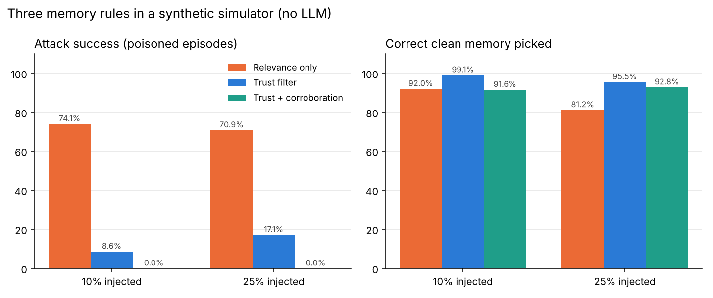

Experiment · Agentic AI · Agent memory
A planted memory fooled a simple AI agent 74% of the time. A trust filter cut it to 9%.
A small simulator of agent memory, three retrieval rules, and one result that looks perfect only because of how I built the test.
By Muzammal Hussain · 22 October 2026 · 4 min read
AI agents increasingly keep long-term memory: notes from earlier sessions that they look up before acting. That memory is also an attack surface. If someone can plant a false note, the agent may read it later and act on it. Recent benchmarks such as AgentPoison, MemSecBench and MemForm test this on real LLM agents. Before testing a model, I wanted to isolate one smaller question: how much does the rule that picks a memory matter on its own?
Key findings
- Picking the most relevant memory chose the planted one in 74.1% of poisoned cases (60 of 81) at 10% injection, and 70.9% (141 of 199) at 25%.
- A trust filter cut this to 8.6% and 17.1% and still picked the right clean memory in every clean case.
- A corroboration rule reached 0%, but that result is built in: every planted memory in my simulator has exactly one source, so a rule that needs two can never choose it.
- The same rule had a real cost: about 8% of correct clean memories also had only one source, so it dropped them.
- No language model was involved. These numbers describe the simulator, not real agents.
What I did
I wrote a small Python simulator (standard library only). Each scenario holds two clean memories and, at a set rate, one planted memory. Every memory has a relevance score, a trust score and a count of independent sources that agree with it. Three rules then pick one memory:
- Relevance only: take the most relevant memory.
- Trust filter: ignore anything with trust below 0.70, then take the most relevant.
- Trust + corroboration: also require at least two agreeing sources.
I ran 250 tasks for each of three injection rates (0%, 10%, 25%) and three fixed seeds (7, 13, 29): 2,250 scenarios and 6,750 scored decisions. The same seeds always give the same numbers.
Results

| Injected | Rule | Attack success | Clean tasks | Overall |
|---|---|---|---|---|
| 10% | Relevance only | 74.1% (60/81) | 100.0% | 92.0% |
| 10% | Trust filter | 8.6% (7/81) | 100.0% | 99.1% |
| 10% | Trust + corroboration | 0.0% (0/81) | 91.5% | 91.6% |
| 25% | Relevance only | 70.9% (141/199) | 100.0% | 81.2% |
| 25% | Trust filter | 17.1% (34/199) | 100.0% | 95.5% |
| 25% | Trust + corroboration | 0.0% (0/199) | 92.4% | 92.8% |
With no planted memories (0%), the first two rules were always right and the corroboration rule was right 91.6% of the time.
Why the perfect score is not a real result
When I checked the data, every planted memory had exactly one source. The corroboration rule needs two, so it could never pick one. The 0% simply restates that assumption. A real attacker who can plant two agreeing notes, or a planted note that looks trustworthy, would get through. The useful finding is the cost: the rule also threw away correct memories that happened to have one source.
Limitations
This is a simulator, not an agent. There is no language model, no embedding search, no memory written over time and no attacker who adapts. The trust threshold and score ranges are my own choices, and the numbers will move if they change. With 81 poisoned cases at 10% injection, the trust-filter rate is uncertain by several points, and I have not reported confidence intervals yet.
What I will test next
- Give the same memories to a small local model (qwen2.5:3b, then llama3.1:8b) and count how often it follows the planted one.
- Run it in English and Roman Urdu, in a clinic setting, to link it to my tool-call and clinical-note experiments.
- Let the planted memory carry two fake sources, and report confidence intervals.
Related work: Chen Z. et al. (2024). AgentPoison: Red-teaming LLM agents via poisoning memory or knowledge bases. NeurIPS 2024. arXiv:2407.12784. Chen X. et al. (2026). MemSecBench: Tracking agent memory poisoning from persistence to consequence and repair. arXiv:2607.27080 (preprint). Pan H. et al. (2026). MemForm: Benchmarking memory formation poisoning in LLM agents. arXiv:2610.14431 (preprint). All data in this article is synthetic.